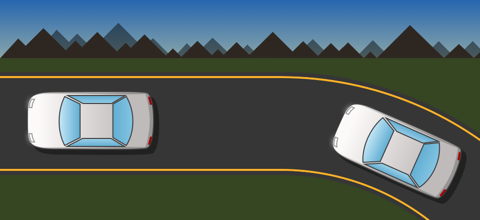

Real-Time, Digestible Data
Drive-Thru Monitor is designed to convey the state of a restaurant's drive-thru without
overwhelming users with numerical statistics.
A simple bar graph compares the current average drive-thru service times with a pre-selected goal time, and bubbles attached
to the car graphics convey how long each car has been waiting.
Maps to Each Restaurant's Actual Drive-Thru Layout
Unlike other drive-thru monitoring systems on the market, which use highly abstract representations
of the drive thru (such as a simple list of times), Drive-Thru Monitor uses configurable visuals based on aerial views of actual drive-thrus.

Inviting Graphics
Drive-Thru Monitor features video-game inspired visuals, including animated car motion and a real-time day/night cycle.
Watching the little cars drive around can be kind of fun, like watching a train set...
Want to see it in action?
Drive-Thru Monitor will soon be deployed by a major restaurant chain at thousands of locations throughout the United States,
so look out for it at a restaurant near you!